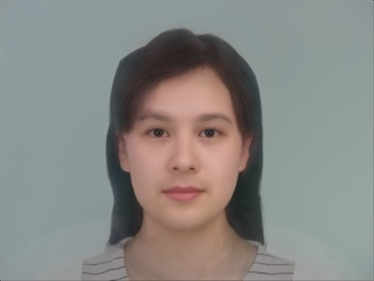

CS180 Project 3
Face Morphing
by Ruiqi Wang
Overview
In this project, I morphed my face into my friend's face using triangulations for shape change and using cross-dissolve and inverse warping for color change.
In addition, I computed mean shape and mean face of female sample faces and male sample faces, and created a caricature of myself.
Then I warped part of myself to the mean male face, which changed my gender and part of ethinity.
Part 1: Defining Correspondences
Preprocessing
I prepared a picture of myself, and a picture of my friend, both with no glasses, shutted mouth and white background.
I cut the picture by hand to make them look roughly the same, then used python code to rescale and resize the images in order to have exactly same dimensions (1200, 900, 3).
Defining Correspondences
Using the tool provided on the website, I defined 67 pairs of correspondence points on the preprocessed images.
The points represents the shape of our head, face, neck, ears, eyes, eyebrows, nose and mouth.
Export the points in JSON file, then read them in the code as two numpy arrays.
Add the 4 corners of the image as keypoints too, so I can capture the whole image.
Triangulation
I computed the midway shape by taking the mean of the two arrays of keypoints.
Then, compute a Delaunay triangulation on the midway shape for morphing, using function Delaunay from scipy.spatial.
Delaunay triangulation does not produce overly skinny triangles, which is good for smooth morphing in following steps.
Below is the facial keypoints and the triangulation I computed for the images.
Part 2: Computing the "Mid-way Face"
Approach
In order to compute the midway face, I need to find the midway shape, warp both faces into that shape, and average the colors together.
(1) The midway shape is easy to compute, just take the average of ImageA keypoints and ImageB keypoints.
(2) Then, I used inverse warping to warp faces into the midway shape. I defined three helper functions, computeAffine, bilinear_interpolation, and interpolate_rgb_channels.
- computeAffine takes in two arrays, each containing 3 points representing a triangle.
It stacks a row of 1 to triangle2,
and uses np.linalg.solve to find and return a matrix representing the affine transform from triangle1 to the triangle2.
- bilinear_interpolation takes in the source image and floats x, y representing the computed pixel.
The function finds the nearest 4 pixels around(x, y) and take the weighted average of the values from the four pixels.
- Since the images are colored, interpolate_rgb_channels divide image in to 3 color channels
and calls bilinear_interpolation three times to interpolate each channel, and then stacks the channels back.
With these helper functions, I defined the function inverse_warp(image, src_tri, dst_tri, size, rr, cc).
Here image is the sources image, size is the shape of it. rr and cc contain the location of all pixels inside the dst_tri.
Firstly, use computeAffine to find the matrix for the transformation from destination triangle to the source triangle, which is an inverse transform.
Then, apply the inverse matrix to the array of all pixels in destination matrix to get their positions in the source image.
Lastly, use interpolate_rgb_channels to get the colors of the pixels. Create and return an empty image with the warped triangle colored.
(3) In order to compute the midway face, I need to loop through all triangles and inverse_warp each triangle with imageA and imageB respectively, take the average color, and put the triangles in my destination image.
Thus, I implemented the function morph suggested in next section here, with inputs imageA, imageB, pointsA, pointsB, tri, warp_frac, dissolve_frac.
To compute the midway face, just set both warp_frac and dissolve_frac to be 0.5.
In the function morph, firstly I computed intermediate shape, which is a weighted average of keypointsA and keypointsB. Initiate an empty image for the final result.
( weight is 1 - warp_frac for A and warp_frac for B)
Then, loop through all triangles. For each triangle, find all pixels in the intermediate triangle using function polygon from skimage.draw, which gives rr, cc.
use inverse_warp twice to find its color from A and B respectively, and take the weighted average of the colors.
( weight is 1 - dissolve_frac for A and dissolve_frac for B)
Finally, replace pixels in the destination triangle in result image, which forms the whole image after we loop through every triangle.
Problems
I met one problem in the very last step. In my initial implementation, I added the whole averaged warped image to the result image.
This was fine for most pixels: the averaged warped image has colors in the triangle, and all zeros in other places, where as the result image has zero in the triangle.
However, for pixels at the edge of different triangles, some white lines were formed.
This was because those pixels were considered in both triangles, so they were added twice in this implementation. Then, their value exceeds 1 and formed white lines.
In order to solve this, I replace the triangle in the result image by the warped triangle.
In this case, if an edge pixel is consider by more than one triangle, it will keep the value from the last triangle added to the image, so there will not be white lines.
Result Mid-way Face
Part 3: The Morph Sequence
Approach
I have already implemented function morph in Part 2,
so the only thing left for Part 3 is to call morph with different warp-frac and dissolve_frac to create a sequence of intermediate images.
I looped through 0 to 44 frames, with ith frame having warp-frac = dissolve_frac = i / 44, and created a morph sequence.
Result:
Youtube video link

Part 4: The "Mean face" of a Population
I used Danes dataset, and divided the sample faces into two populations: male and female.
(1) Compute the average shape
I implemented a helper function read_asf_file to read in the keypoints as numpy array from .asf files.
Then I used os.listdir(folder_path) to read all .asf files and take the average of keypoints to form the average shape.
(2) Morph sample images to average shape
This is similar to function morph in previous part.
I implemented function morph_to_average_shape(image, keypoints, average_shape, tri) ,
in which I looped through each triangle and used inverse_warp to extract the color of each triangles from the source image. Below are some samples:
Some Samples from Female population
Some Samples from Male population
(3) Compute the average face of the population
I morphed each sample image into the average shape, and take the average of all the morphed images in the population.
Below are the average female face and average male face:
Then, I resized and padded the image of myself to have same dimensions as the sample images.
I plotted the keypoints of the sample images, and used the provided tool to take correspondent keypoints on myself.
Below are my face warped into the average female shape and the average female face warped into my shape.
My Face warped into Average Female Shape
Average Female Face warped into My Face Shape
Part 5: Caricatures: Extrapolating from the Mean
Approach
To make a caricature of myself, I found the difference between my keypoints and average_female_shape,
and add alpha * difference back to my keypoints to get the caricature shape. Then, morph my face into caricature shape.
Below are my face morphed into caricature shapes with difference alpha:
Bells and Whistles: Change Gender and Ehinicity of My Face
Approach
I used the average male face I computed in previous parts.
I defined 58 pairs of correspondence points between my face and average male face,
and used function morph I defined in part 3 with different warp_frac and dissolve_frac.
Since the samples used to compute average male face are mostly white, and I am asian, I changed both my gender and my ethnicity.
Below are the results of morphing just the shape, just the appearance, and both.
Morph just the shape (warp_frac = 0.8)
Morph just the appearance (dissolve_frac = 0.8)

Morph both shape and appearance